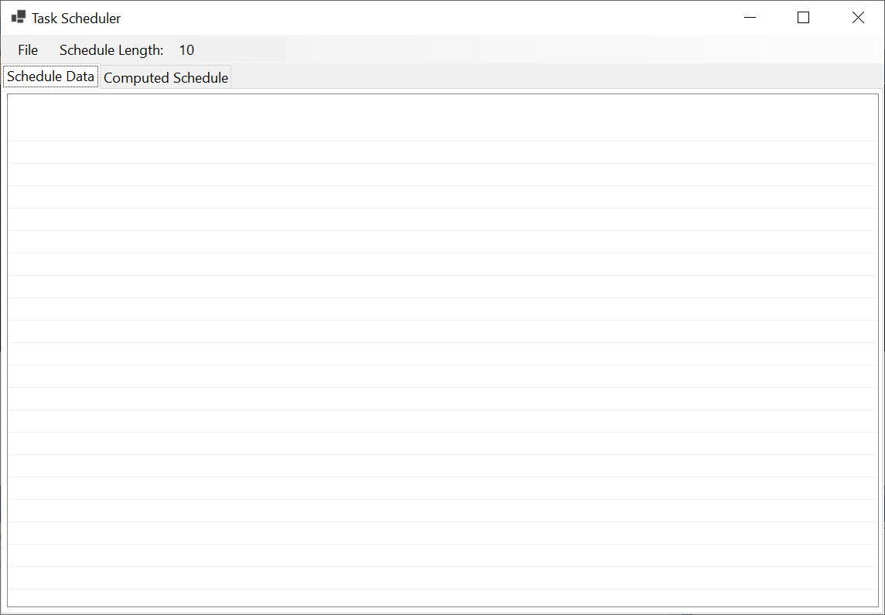
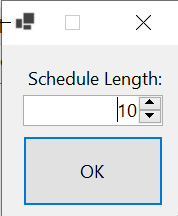
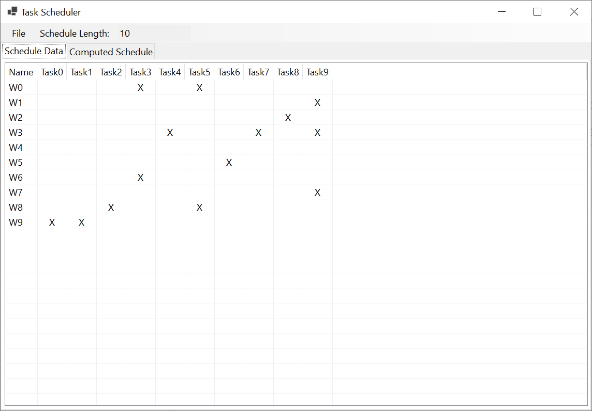
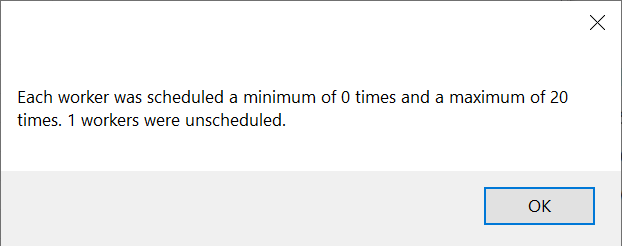
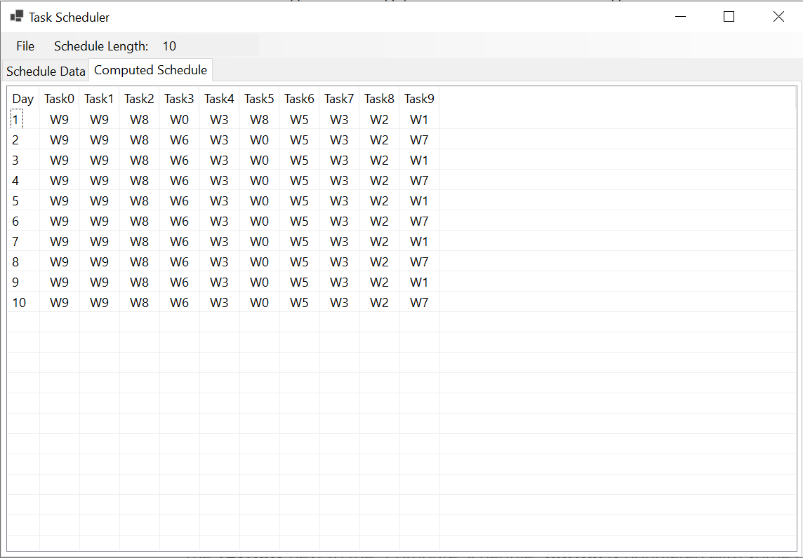
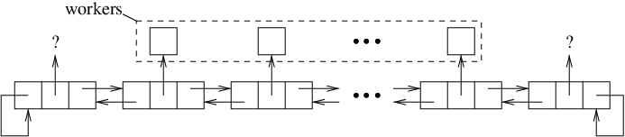
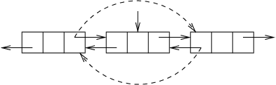
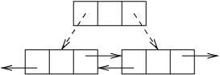
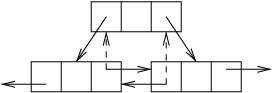
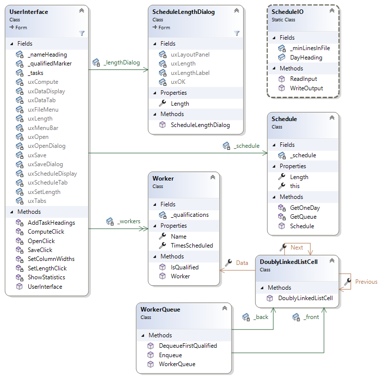

For this assignment, you will write a complete program to produce day-by-day schedules of workers for various tasks.
Homework Assignment 2: Scheduling Workers0. Contents1. User Requirements1.1. Input File Format1.2. Output File Format2. Starting the Assignment3. User Interface3.1. Manual User Interface Design3.2. Behavior of the GUI4. Scheduling Algorithm and Data Structures5. Software Architecture6. Coding Requirements6.1. The Worker Class6.1.1. private field6.1.2. Properties6.1.3. Constructor6.1.4. A public IsQualified method6.2. The DoublyLinkedListCell Class6.2.1. Properties6.2.2. Constructor6.3. The WorkerQueue Class6.3.1. private fields6.3.2. Constructor6.3.3. A public Enqueue method6.3.4. A public DequeueFirstQualified method6.4. The Schedule Class6.4.1. private field6.4.2. public property6.4.3. public indexer6.4.4. A private method to get a WorkerQueue containing the Workers6.4.5. A private method to build a single day of the schedule6.4.6. Constructor6.5. The ScheduleIO Class6.5.1. Fields6.5.2. A public static method to read a file6.5.3. A public static method to write a schedule to a file6.6. The ScheduleLengthDialog Class6.7. The UserInterface Class6.7.1 private fields6.7.2. An event handler for the "Schedule Length:" menu item6.7.3. A method to add the task names as column headers to a ListView6.7.4. A method to set the widths of the columns in a ListView6.7.5. An event handler for the "Open Data File" menu item6.7.6. A method to display the statistics6.7.7. An event handler for the "Compute Schedule" menu item6.7.8. An event handler for the "Save Schedule" menu item7. Testing and Performance8. Submitting Your Assignment
A large organization has a number of local offices. Each office has a certain number of workers, each of whom is qualified to be responsible for certain tasks. You are to write a program that individual offices can use to construct daily schedules for a given number of days, so that for every day of the schedule, each task is covered by some worker. Ideally, each worker should be scheduled for no more than one task on any day, and should be scheduled about the same number of times as every other worker. Our approach will attempt to meet these goals, but will not guarantee them.
The qualifications of the workers are given in files of a certain format. Your program should also be capable of writing the schedules that it produces to files in a certain format. These file formats are described in what follows. The program should also be capable of displaying to the user both the data from the input files and the schedules it produces in an easy-to-read format. The details of this format are discussed in Section 3. User Interface.
The input file should be a plain text file in which each line contains a number of fields separated by commas. Some of these fields may be empty. The file should contain at least two lines, and each line should contain the same number of fields. Note that if files in this format are viewed in typical spreadsheet applications, the fields are organized into columns.
The first line of the file should contain column headings, separated by commas. The first heading is for a column containing worker names - this heading may be anything (or empty), as it will be unused by the program. The subsequent headings are the names of the different tasks. Thus, if there are n tasks, the first line will contain n+1 fields. We will refer to these tasks as tasks 0, 1, ..., n-1; i.e., the second field corresponds to task 0, etc.
The following lines of the file contain the workers' names and qualifications. The first field of each line will contain the name of a worker. Each subsequent field will indicate whether the worker is qualified for the task corresponding to that column. A nonempty field indicates that the worker is qualified for that task, and an empty field indicates that they are not qualified for that task. Thus, for example, the line:
Pat,,x,x,,,x,
indicates that Pat is qualified for tasks 1, 2, and 5, but not for tasks 0, 3, 4, and 6.
Sample input files are provided in the Data folder of your repository for this assignment (see Section 2. Starting the Assignment).
This file also consists of a number of lines of plain text, and each line contains fields separated by commas. The first line contains column headings. Its first field contains the string, "Day", and successive fields contain the names of the tasks provided in the input file. Thus, the first line of the output file should be identical to the first line of the input file, except for the first field.
Each of the remaining lines contains the schedule for one day. The first field contains the day number, starting with 1 (in the second line) and continuing for the number of days required. Subsequent fields in each line each contain the name of the worker that is assigned the corresponding task on that day. If some task has no worker assigned for that day, that field is empty.
For example, if the first line is:
xxxxxxxxxxDay,Lead,Backup,Guitar,Bassoon,Drums
and the third line is:
xxxxxxxxxx2,John,Paul,George,,Ringo
then this indicates that on day 2, John was assigned the task "Lead", Paul was assigned the task "Backup", George was assigned the task "Guitar", no one was assigned the task "Bassoon", and Ringo was assigned task "Drums".
Sample output files are provided in the Data/computedExamples folder of your repository for this assignment (see Section 2. Starting the Assignment).
Create a GitHub repository using the link provided in the Canvas assignment and clone it to your local machine. This repository should contain the following:
Note that no code is provided other than the unit test code. You will need to write the entire program, including designing the GUI.
In this section, we will describe the look and behavior of the GUI that you are to design. We will first outline what you will need to build using the Design window. Then we will describe the required behavior of the GUI. You will need to provide code to implement this behavior (see Section 6. Coding Requirements). The demo video also illustrates the expected look and behavior.
Using the Design window, you will need to design a GUI resembling the following:

At the top is a MenuStrip. Both "File" and "Schedule Length:" are MenuItems, but the "10" is in a TextBox (use the drop-down menu marked "Type Here" to select MenuItem or TextBox, as appropriate, before typing in the text). The "File" menu should contain the following menu items:
The first of these menu items should be enabled initially, but the other two should be disabled. Make the TextBox in the MenuStrip read-only using its ReadOnly property.
Below the MenuStrip is a TabControl. In order to cause the TabControl to fill the entire remaining area, click the drop-down to the right of its Dock property, then click the large button in the center of the drop-down menu. To set the contents of the tabs, click the TabPages property, then click the "..." button to its right. This will open a window with the two tabs listed in the list on its left side. For each of these tabs, click the tab name in the left panel and change the following properties in the panel on the right:
After both tabs are changed in this way, click the "OK" button.
To set the contents of each tab page, first click the tab to select that page, then add a ListView to the page. Set its Dock property to fill the tab page, and set its View property to Details - this will cause it to display its contents arranged in a grid. Finally, set its GridLines property to True so that lines will be drawn between rows and columns of the grid.
Note: At times, you may find it difficult to select a particular control on the form. If this is the case, you can use the Tab key to step through the controls one at a time.
Besides the visible controls, you will also need to add an OpenFileDialog for selecting an input file and a SaveFileDialog for selecting an output file. For each of these dialogs, set the FileName property to the empty string, and set the Filter property to the following:
xxxxxxxxxxCSV spreadsheet files|*.csv|All files|*.*
This filter will cause .csv files to be shown by default.
Finally, you will need to define another form that will be used to change the value in the TextBox within the MenuStrip. Right-click on the Ksu.Cis300.Scheduler project (in bold face), and select "Add->Form (Windows Forms)...". Enter the name "ScheduleLengthDialog.cs", and click the "Add" button. In the resulting Design window, define a form resembling the following:

First, add a FlowLayoutPanel to hold the visible controls, and set this panel's FlowDirection property to TopDown. This will cause the controls that you will add to this panel to be laid out automatically from top to bottom. As a result, the layout will be more consistent on different displays. Add the following to this panel:
After these controls have been added, set the FlowLayoutPanel's AutoSize property to True and its AutoSizeMode property to GrowAndShrink. This will resize the panel to be just large enough to hold its controls. Then set the form's AutoSize and AutoSizeMode properties in the same way. The form's size shown in the Design window won't change, but when it is displayed by the program, it will be resized so that its controls just fit within it.
Two more of the form's properties need to be changed to make it behave correctly. First, to cause the Enter key to close the form as if the "OK" button had been clicked, set the AcceptButton to the name of the "OK" button. Second, to disable the maximize box, set the MaximizeBox button to False. In conjunction with the setting of the AutoSize property, this will prevent the form from being resized.
Here we describe the behavior that will need to be implemented in code (see Section 6. Coding Requirements).
Clicking the "Schedule Length:" menu item in the main form should cause the ScheduleLengthDialog to be displayed as a modal dialog. The value in the NumericUpDown should be the same as the current value within the TextBox in the main form. The user may then set this value to any positive integer value no greater than 1000. If the user either presses the Enter key or clicks the "OK" button, the dialog should close, and the value in the TextBox should be set to the value from the dialog's NumericUpDown. If the user closes the dialog by clicking the 'X' in the upper-right corner, nothing in the main form should change.
Clicking the "Open Data File" menu item should cause the OpenFileDialog to be displayed. It should not display a file name the first time it is shown, but subsequently, it should show the name of the last input file selected. The drop-down above the "Open" and "Cancel" buttons should read, "CSV spreadsheet files (*.csv)", by default, though clicking it should allow "All files (*.*)" to be selected.
If the user selects a file, the program should attempt to read that file to obtain a list of workers and the tasks they are qualified to perform (see Section 1.1. Input File Format above). If the file is read successfully, the "Compute Schedule" menu item should be enabled, the "Save Schedule" menu item should be disabled, and the data loaded from the CSV file should be displayed in the ListView contained inside the "Schedule Data" tab page, which should be displayed, and any data contained within the other ListView should be removed. For example, opening the provided data file, "10-10.csv" should cause the GUI to look as follows:

If reading the file causes an exception not due to programmer error to be thrown, it should display that error message in a MessageBox and leave the GUI unchanged. You will need to check explicitly for the following error conditions:
Clicking the "Compute Schedule" button (while it is enabled) should cause a schedule to be generated using the data most recently read from an input file. The number of days in the schedule should be the value from the TextBox. This schedule should be constructed using the algorithm described in Section 4. Scheduling Algorithm and Data Structures. A MessageBox resembling the following should then be shown:

This message should indicate the minimum number of times any worker was scheduled, the maximum number of times any worker was scheduled, and the number of workers that were not scheduled at all. After this MessageBox is closed, the "Save Schedule" menu item should be enabled, and the generated schedule should be displayed in the ListView contained within the "Computed Schedule" tab page, which should be made visible. For example, the GUI should resemble the following after a schedule of length 10 is generated from "10-10.csv":

If the "Save Schedule" menu item is selected (when it is enabled), the SaveFileDialog should be displayed. It should not display a file name the first time it is shown, but subsequently, it should show the name of the last output file selected. The drop-down above the "Open" and "Cancel" buttons should read, "CSV spreadsheet files (*.csv)", by default, though clicking it should allow "All files (*.*)" to be selected.
If the user selects a file, the schedule should be written to the selected file in the format described in Section 1.2. Output File Format. If the file is written successfully, the message "File successfully saved." should be shown in a MessageBox. If any exception is thrown during the writing of the file, it should be displayed in a MessageBox.
In order to attempt to meet the scheduling goals, we will store the workers in a modified queue. The modification will allow us to dequeue the first (i.e., nearest to the front) worker qualified for a certain task. Thus, for each day, we will iterate through the tasks, scheduling a worker for each task on that day. We find the worker to schedule for that task by dequeuing the first worker qualified for that task. We then enqueue that worker to the back of the queue. Thus, the algorithm will always give preference to those workers who have been idle the longest. However, this algorithm will not always produce an optimal schedule.
We will implement this modified queue using a doubly-linked list. A doubly-linked list is similar to a linked list, but each cell in the list contains a reference to the previous cell in the list, in addition to the reference to the next cell in the list. Furthermore, we will use two header cells - one at the front and the other at the back. These header cells won't contain meaningful data, but will simply be used to keep track of the beginning and end of the list. The doubly-linked list therefore is structured as follows:

Note that in the header cell at the front, the reference to the previous cell is a reference back to the header cell itself, and that likewise, the reference to the next cell after the back header cell also references back to the header cell itself. We do this to avoid the need for null references. As a result, we can't iterate through a doubly-linked list by looping as long as the current cell is non-null. Instead, we need to loop as long as the current cell is not the appropriate header cell.
A doubly-linked list simplifies the process of finding a cell to delete - we no longer need to look ahead to the next cell. Instead, we can use the links in the cell we want to delete to access the two cells whose links need to be changed. The following image shows the updated references using dashed lines:

Note that because we are using header cells (which will never be deleted) at the front and back, there will always be cells preceding and following the cell we are deleting.
Inserting a cell is a little more involved for a doubly-linked list because more references need to be changed. First, we set the links in the cell we are inserting to the cells that are to precede and follow it:

Then we update the links in the preceding and following cells to refer to the cell being inserted:

The workers will also be stored in an array, and the names of the tasks will be stored in a string[ ]. However, where we don't need the names of the tasks, we will instead refer to the tasks using their locations within this string[ ].
Your program should contain seven classes, as shown in the following class diagram:

The UserInterface class defines the main GUI. The ScheduleLengthDialog class defines the dialog used to change the length of the schedule to be generated. The ScheduleIO class is a static class containing methods for reading and writing files. Instances of the Worker class represent individual workers. Instances of the Schedule class represent individual schedules. The WorkerQueue class defines the modified queue used to implement the scheduling algorithm, as outlined in Section 4. Scheduling Algorithm and Data Structures. Instances of the DoublyLinkedList cell class are individual cells of a doubly-linked list. Each of these is described in more detail in Section 6. Coding Requirements below.
Note that some of the fields and properties are shown in the above diagram as labels on arrows. This indicates that the class where the arrow begins contains a field or property with the arrow's label as its name, and the class where the arrow leads is the type of that field or property. For example, _lengthDialog is a private field of type ScheduleLengthDialog within the UserInterface class. Similarly, double-headed arrows indicate collections. For example, _workers is a collection (in this case, an array) of Workers within the UserInterface class.
The names of private fields and some public members in your program don't need to match the names shown above as long as they obey the naming conventions for this course. However, in order for the unit test code to compile, all public members of the Schedule, Worker, WorkerQueue, and DoublyLinkedListCell classes must match those shown.
Specific requirements for each of the classes are given in what follows.
In this class, you will maintain all of the information relevant to a single worker. You will need one private field, two public properties, a public constructor, and one public method.
You will need the following private field:
You will need the following public properties:
You will need a public constructor that you will use to initialize the worker's name and qualifications. Recall that the name of a constructor is the same as the name of the class that contains it, and that a return type isn't supplied. It will take as its only parameter a string[ ] whose first element gives the worker's name, and whose subsequent elements indicate the worker's qualifications. Specifically, element i+1 will be a nonempty string if the worker is qualified for task i; otherwise it will be the empty string (note that the empty string is a string with length 0; i.e., it is "", not null). The length of the bool[ ] field will therefore need to be one less than the length of the string[ ] parameter.
If the given string[ ] is null, throw an ArgumentNullException. If it is non-null but has a length of 0, throw an ArgumentException.
This method will take as its only parameter an int identifying the task, and it will return a bool indicating whether this Worker is qualified for the given task. If the given int is outside the bounds of the bool[ ] field, throw an ArgumentException.
Each instance of this class will implement a single cell of a doubly-linked list. This class is not generic; i.e., it has no type parameter. Instead, each cell will store a Worker as its data item. You will need to define three public properties and a public constructor.
You will need to define the following public properties:
You will need a public constructor that takes as its only parameter the Worker to store in this cell. If the given Worker is null, throw an ArgumentNullException. Initialize the other two properties to this cell (i.e., to this).
This class will be used to implement the modified queue as described in Section 4. Scheduling Algorithm and Data Structures. The elements of this queue will be instances of the Worker class; hence, this will not be a generic class. This class will be implemented using a doubly-linked list as described in Section 4. Scheduling Algorithm and Data Structures. You will need two private fields, a public constructor, and two other public methods.
You will need DoublyLinkedListCell fields referring to the following cells in the list:
You will need to initialize both of these to new instances, either where you define them or in the constructor (see the next section). For the Worker in each of these cells, construct a new instance with a single-element string[ ] containing the empty string as its element.
The public constructor should take no parameters. If you didn't initialize the two private fields where you defined them, you will need to do that here. Additionally, you will need to link these cells together to form a doubly-linked list.
This method should take as its only parameter the Worker to enqueue. It should return nothing. If the given Worker is null, throw an ArgumentNullException. Otherwise, insert the Worker in a new cell at the back of the list, just before the header cell at the back.
This method should take as its only parameter an int indicating a task number. It should return a Worker? giving the first worker qualified for the given task, or null if no qualified worker is found. If it finds a qualified worker, the cell containing this worker should be removed from the list.
This class needs one private field, one public property, one public indexer, two private methods, and a public constructor.
The private field should be a readonly string[ ][ ] containing the schedule. This is an array of arrays; i.e., each element is a string[ ]. Each of these string[ ]s will contain a schedule for one day. The string at index i of the string[ ] at location k (i.e., element [k][i] of the string[ ][ ]) will be the name of the Worker assigned to task i.
You will need a public property Length that gets an int giving the number of days in the schedule. Do not use the default implementation. Instead, return the length of the above field.
An indexer allows user code to index into a Schedule as if it were an array. The definition of an indexer is similar to a property definition, with the following differences:
The type of the indexer should be string. It should have a get accessor that returns the element of the string[ ][ ] field corresponding to the given day (where the first day is indicated by 0) and task. This will allow user code to get the name of the worker assigned to the given task on the given day by indexing into the schedule with the day and task number, as if the schedule were a 2-dimensional array. The indexer should not have a set accessor.
This method should be static; hence, it won't be able to access the field, the property, or the indexer (you won't need any of these). It should take as its only parameter a Worker[ ] containing the workers to place into the queue. It should return a WorkerQueue containing these workers. As you place each worker into the queue, set its TimesScheduled property to 0.
This method should also be static. It should take as its parameters a WorkerQueue containing the workers to schedule and an int giving the number of tasks. It should return a string[ ] whose length is the number of tasks. Element i of this array should give the name of the worker assigned to task i, where i is a nonnegative integer less than the number of tasks. Follow the algorithm provided in Section 4. Scheduling Algorithm and Data Structures. If no qualified worker is found for some task, place the empty string into the corresponding location of the array to be returned. Whenever a qualified worker is added to the schedule, increment its TimesScheduled property.
The public constructor should take the following parameters:
If the given array is null, throw an ArgumentNullException. Otherwise, use the two private methods to get a WorkerQueue containing the given workers and to build the string[ ][ ] field. To construct a new string[ ][ ] of the appropriate size, use the number of days as the first index, and leave the second index empty; for example: new string[n][]. Then successive elements of this array can be assigned arrays returned by the above method.
This class should be static. It will need two static fields and two public static methods.
This class needs the following fields:
Use these fields, rather than the literals "Day" or 2 in the code that follows.
This method should take as its only parameter a string giving the name of the file to read. Its return type should be (string[ ], Worker[ ]). This type is a value tuple, which provides one mechanism for returning more than one object from a method. In this case, you will return a string[ ] giving the names of the tasks and a Worker[ ] giving the workers. Thus, if you have a string[ ] t and Worker[ ] w, you can return both using:
return (t, w);If the given string is null, throw an ArgumentNullException. Otherwise, read the given file using File.ReadAllLines, then check to see if the file has the minimum number of lines required - if not, throw the appropriate exception as stated in Section 3.2. Behavior of the GUI. Then use the first line's Split method to split it into fields delimited by commas (you can pass ',' as this method's only parameter). Split will return a string[ ] whose elements contain the separate fields. You won't need the first field; hence, you will need to copy the other fields to a new array containing one fewer location - this will be the array of task names that you will eventually return. For each subsequent line of the file, split it into an array of fields in the same way. Check to see that the number fields in each line is 1 more than the number of tasks; if not, throw the appropriate exception as outlined in Section 3.2. Behavior of the GUI. From each array of fields, you can construct a new Worker, and place it in a Worker[ ] to be returned later. Note that because the first line of the file does not contain the description of a worker, the indices in the string[ ] containing the lines of the file and the Worker[ ] accumulating the workers will differ by 1.
This method should do no exception handling.
This method should take the following parameters:
It should return nothing. If any of the parameters are null, throw an ArgumentNullException.
To do the I/O within this method, you will need to use a StreamWriter and a using block as described in Advanced Text File I/O. Write one field at a time using the StreamWriter's Write method, including commas as described in Section 1.2. Output File Format. At the end of each line, call the StreamWriter's WriteLine method with an empty parameter list. Recall that you can obtain the name of the worker schedule for task i on day k by indexing into the schedule with k and i as if it were a 2-dimensional array. Keep in mind that days within the schedule are indexed beginning at 0, but will start at 1 in the output file.
To allow user code to access the contents of the NumericUpDown defined within this class, you will need to add one public property to the code. This property needs to get or set a decimal giving the length of the schedule. The get accessor needs to return the value stored in the NumericUpDown. The set accessor needs to assign the value keyword (which will contain the value assigned by the user code) to the value stored in the NumericUpDown.
In this class, you will need to add six private fields, four event handlers, and three other private methods.
You will need the following private fields:
This event handler will first need to obtain the current schedule length from the TextBox in the MenuStrip. After doing the appropriate conversion, it should set the schedule length within the ScheduleLengthDialog to this value. Then using similar code to how you would display a file dialog, display the ScheduleLengthDialog using its ShowDialog method. This method is inherited from the Form class and shows the form as a modal dialog, returning a DialogResult when the user closes the dialog. If this method returns DialogResult.OK, obtain the schedule length from the dialog, and place this value into the TextBox in the main form's MenuStrip.
This method should take as its only parameter the ListView to which the headers will be added. It should return nothing. You should assume that the first column header has been added before this method is called, so that this method is only responsible for adding the task names. Add each task name as a column header using the Add method of the given ListView's Columns property. This method will return a ColumnHeader. To set this column to center its contents, set this ColumnHeader's TextAlign property to HorizontalAlignment.Center.
After all of the task names have been added, add one more empty column header. Doing so will prevent the ListView from stretching the column representing the last task to fill any additional horizontal space in the control.
This method should take as its only parameter the ListView whose column widths are to be set. You can iterate through the ColumnHeaders in this ListView's Columns property with a foreach loop. Each ColumnHeader has an AutoResize method that can be used to set the column width to either the width of the header or the width of the widest element in the column, excluding the header. We want the column width to be the width of the widest element in the column, including the header. To accomplish this:
First, display the OpenFileDialog, and if the user selects a file, update the GUI as follows:
Read the selected file using the appropriate method from the ScheduleIO class. If you have a string[ ] variable t and a Worker[ ] variable w, you can assign them the values returned by this method using the following syntax:
xxxxxxxxxx(t, w) = // Call the method to read the fileClear the contents of the ListView in the "Computed Schedule" tab. Use the ListView's Clear method.
Because many changes to the ListView in the "Schedule Data" tab may need to be made, we can improve the performance of these changes by calling this ListView's BeginUpdate method. This will cause the changes to be made off-screen until the EndUpdate method is called (see below). At that point, all of the changes are made at once.
Clear the contents of the ListView in the "Schedule Data" tab.
Add to this ListView the header for the first column.
Using the appropriate method above, add the headers for the task names.
Add a row for each worker. To add a row, pass the contents of its first column to the Add method of the ListView's Items property. This method will return a ListViewItem. Use the Add method of this ListViewItem's SubItems property to add the contents of successive columns to this row.
Using the appropriate method above, set the column widths.
Call this ListView's EndUpdate method to cause the above changes to propagate to the display.
Use the TabControl's SelectTab method to make the "Schedule Data" tab page visible. If you don't remember the name you gave this tab page, you can find it by opening the TabControl's TabPages property in the Design window.
Enable the "Compute Schedule" menu item and disable the "Save Schedule" menu item.
If any exception is thrown in Step 1 above, instead of completing the remaining steps, display the exception in a MessageBox.
This method should take no parameters and return nothing. It is responsible for computing the maximum and minimum number of times a worker was scheduled, as well as how many workers were left unscheduled, and displaying them in a MessageBox (see Section 3.2. Behavior of the GUI).
This method will need to obtain the length of the schedule from the TextBox in the MenuStrip (not from the ScheduleLengthDialog, as this value may not have been applied). It should then construct a schedule from the workers, number of tasks, and schedule length, and save it to the appropriate field. Then update the ListView on the "Computed Schedule" tab using a similar pattern as in Section 6.7.5. An event handler for the "Open Data File" menu item. Then select the "Computed Schedule" tab, enable the "Save Schedule" menu item, and display the statistics using the above method.
This method should first display the SaveFileDialog. If the user selects a file, it should write the file using the appropriate method from ScheduleIO. If the file is written successfully, the message, "File successfully saved." should be displayed in a MessageBox. Otherwise, the exception thrown should be displayed in a MessageBox.
Unit tests have been provided to test your Worker, DoublyLinkedListCell, WorkerQueue, and Schedule classes. Follow the instructions given in Homework Assignment 1 to order the unit tests.
Once all the unit tests have passed, you will need to test the remainder of your program interactively. You should do at least all of the tests shown in the Demo video using the test data files provided. You should also try opening the following files to make sure the proper exception, with the proper message (see Section 3.2. Behavior of the GUI), is displayed. Specifically, the following files should display MessageBoxes containing IOExceptions with the following messages:
Your program should be able to handle all of the sample files provided in the Data folder with schedule lengths of at least 100 days with delays of no more than a few seconds.
Be sure to commit all your changes, then push your commits to your GitHub repository. Make sure that the Ksu.Cis300.Scheduler folder has all ten .cs files. Then submit the entire URL of the commit that you want graded.
Note: The repositories for the homework assignments for this class are set up to use GitHub's autograding feature to track push times. No actual testing/grading is done, but after each push, the GitHub page for the repository will show a green check mark on the line indicating the latest commit. Clicking that check mark will display a popup indicating that all checks have passed, regardless of whether your program works. You may also get an email indicating that all checks have passed. The only purpose for using the autograding feature in this way is to give us a backup indication of your push times in case you submitted your assignment incorrectly.